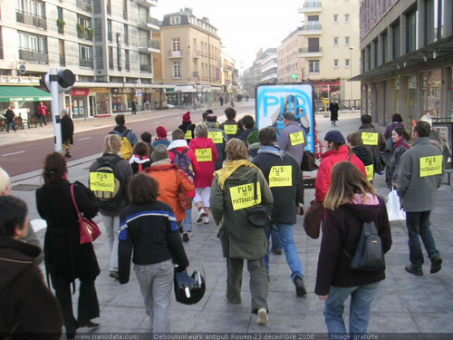

| |
Site dédié à la publication d'informations communiquées par le Collectif des déboulonneurs. En aucun cas ce site n'appelle à des actions illégales. | |
 |
||
|
Accueil du site > Rouen > Barbouillage d’obstacles urbains à Rouen
Ce 23 décembre 2006, 50 personnes environ se sont retrouvées à 10h59 au centre ville de Rouen. Paris-Normandie et la radio France Bleue ont couvert l’action qui s’est terminée à 12h, évoquant chaque fois le procès du 12 janvier à Paris. 3 barbouilleurs ont décoré 14 affiches d’obstacles urbains et d’abribus JCDecaux à la bombe de peinture (n’attaquant pas la couche d’ozone). Sur ces affiches profanées par des graffitis comme « Pub = violence », « Nous, vous, des cibles ? »… ont été placés des autocollants jaunes A4 : « Qui paye la pub ? », « Un boule de billard posée sur un plan incliné a autant de liberté que deux yeux posés sur une affiche . Le Publiphobe », « Quand la pub avance, la liberté recule »… 16 slogans, sur page A4 autocollante, ont été ainsi placés, en plus de multiples petits cartons « 50 x 70 », dont les passants pouvaient comprendre le sens en lisant le tract qui fut distribué à 600 exemplaires ! 
Photo nanodata.com
Le tout fut rondement et joyeusement mené sur deux sites distant de 300 mètres, accompagné par une trompette et, dans les airs, des quilles de cirque colorées. Les 50 activistes avaient chacun une page A4 jaune dans le dos avec reproduit dessus l’un ou l’autre des slogans des 3 barbouilleurs. La place des Arts puis la place du Palais de Justice se sont un temps métamorphosées, avec la sympathie manifeste et parfois émouvante de la grande majorité des passants ; les trois-quatre râleurs de service ont été écoutés mais ont refusé le plus souvent le débat. Le tout s’est terminé par un sketche plein d’humour, réalisé par deux déboulonneurs coiffés d’un bonnet de père Noël, montés sur un banc public, devant 150 personnes… quand la police arriva. Elle fut accueillie avec respect. Les 3 barbouilleurs non-violents se sont faits embarquer sous les applaudissements de la foule. Ils ne sont restés que 1h30 au poste de police, le temps de la déposition. Au début de l’opération, Place des Arts, un obstacle urbain (sucette JCDecaux) a été enveloppée comme une momie avec du papier d’emballage blanc, puis a été inscrit dessus au stylo feutre (pas assez visible) « Ici bientôt un arbre », « Le bonheur n’est pas dans la consommation ». Très bon effet. À retravailler pour d’autres fois ! L’emballage d’obstacle urbain nous plaît beaucoup, l’effet est vraiment spectaculaire sur le plan visuel, mais il faut l’associer comme ici à du barbouillage délictueux. Pour les déboulous de Rouen, il y a eu deux événements notoires ce 23 décembre : 3 barbouilleurs et non plus 1 ; enfin 50 activistes et non plus entre 15-25. À bientôt les ami(e)s ! |
|
Site utilisant SPIP - Hébergement Ouvaton
|